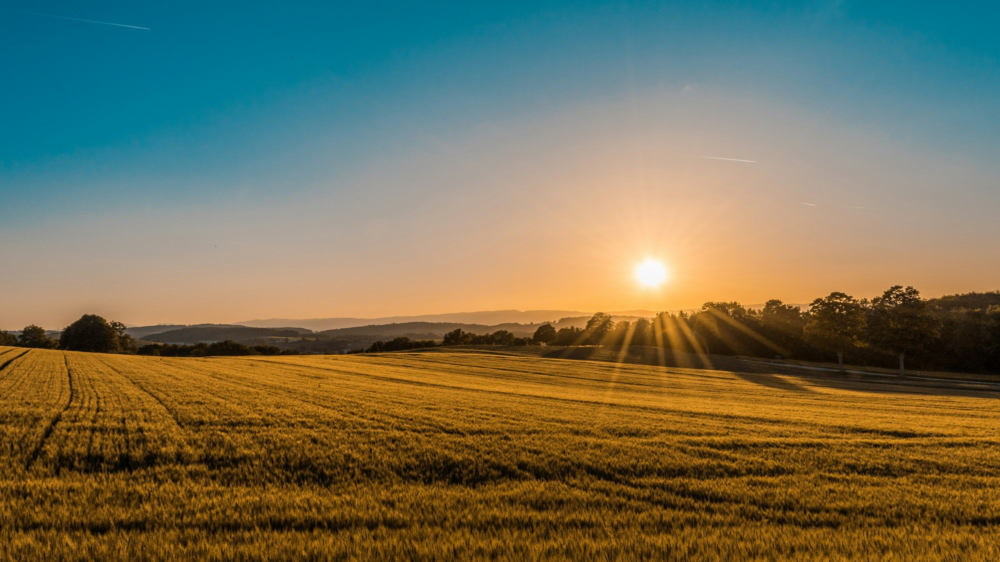

EXPLORE LAND TYPESSPACE TO BELONG
Residential NA
Explore land for a future home, with attention to access, surroundings and residential use.
Enquire about residential na ↗A home near nature. An orchard to nurture. A coastal retreat. Explore land types, then tell us what you have in mind.
Showing all 6 land types

EXPLORE LAND TYPESExplore land for a future home, with attention to access, surroundings and residential use.
Enquire about residential na ↗ EXPLORE LAND TYPES
EXPLORE LAND TYPESExplore orchard opportunities and find out more about plantation condition and care.
Enquire about mango farms ↗ EXPLORE LAND TYPES
EXPLORE LAND TYPESDiscover coastal settings and discuss location-specific requirements.
Enquire about sea side plots ↗Consider plantation land, terrain, access and the possibilities of a working estate.
Enquire about cashew farms ↗EXPLORE LAND TYPESUnderstand classification and restrictions when exploring forest-linked land.
Enquire about forest lands ↗Explore undeveloped land and discuss its suitability for your plans.
Enquire about barren lands ↗These are land categories, not active property listings. Images are illustrative; current availability, location and pricing are shared on enquiry.